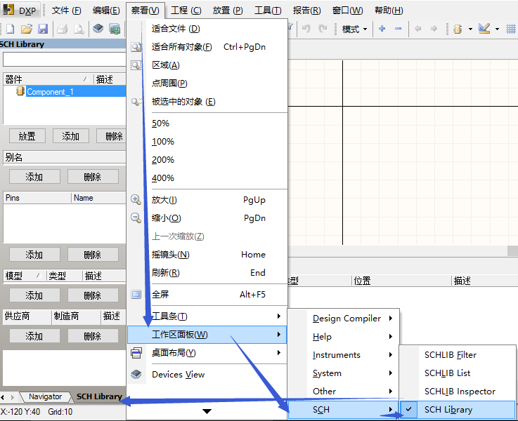
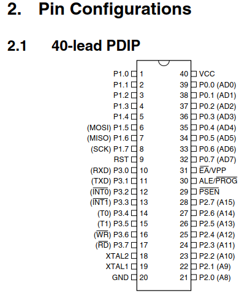
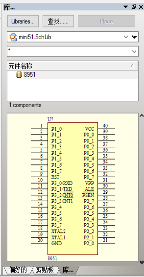
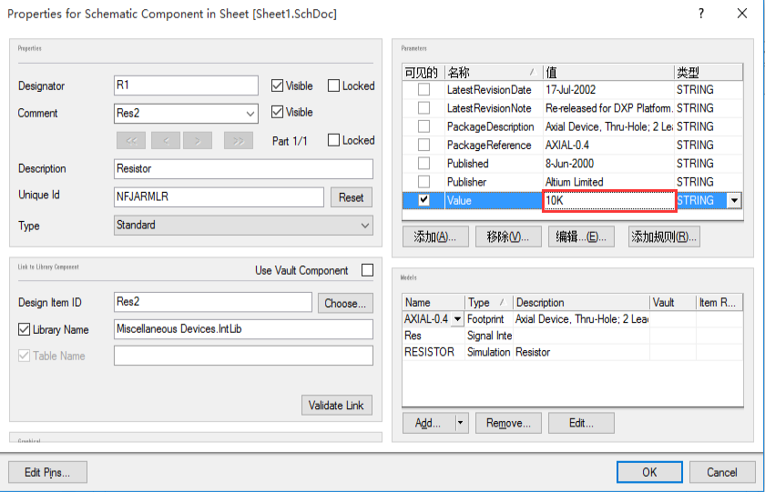
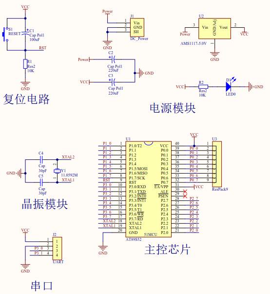

51最小系统原理图绘制
0.说明
通过绘制51系列单片机最小系统原理图，了解Altium Designer的使用方法和操作步骤。
1.准备
1.按《Altium Designer安装说明》中的步骤，安装好Altium Designer。
2.下载51单片机数据手册，推荐Atmel 51单片机，在AT89S51产品页下载《AT89S51数据手册(DataSheet)》，以备查阅。
3.单片机最小系统，也叫做单片机最小应用系统，是指用最少的元件组成单片机可以工作的系统。单片机最小系统的三要素就是电源、晶振、复位电路。
2.绘制元件库
- 打开Altium Designer 软件；
- 新建pcb工程，点击File--New--Project--PCB Project;
- 添加元件库，点击File--New--Library--Schematic Library；
- 保存全部，点击File-Save All。
- 切换视图到元件库。
- 新建元器件，点击Tool--Rename Component，将名称命名为8951;
- 放置元器件框图，点击Place--Rectangle，放置一个矩形。
- 参考51单片机数据手册，记录单片机管脚位号和名称。
- 点击Place Pin，放置引脚。
- 设置属性，点击Tool--Component Properties...，设置默认位号为U?,默认描述为8951。
- 打开库视图，点击View--Workspace panels--System--Libraries。可以看到已经绘制的51单片机元件图，参考如下。


Tips:
1.名称字母上方若需上划线，则在字母后加字符“\”。
2.快捷键：选中引脚，按住鼠标左键，再按键盘键：
空格键--将选中的物体逆时针旋转90°;X--放置元件时，左右翻转；Y--放置元件时，上下翻转。
3.选中引脚，按Tab键，弹出属性对话框，可编辑名称和位号等。
1.名称字母上方若需上划线，则在字母后加字符“\”。
2.快捷键：选中引脚，按住鼠标左键，再按键盘键：
空格键--将选中的物体逆时针旋转90°;X--放置元件时，左右翻转；Y--放置元件时，上下翻转。
3.选中引脚，按Tab键，弹出属性对话框，可编辑名称和位号等。

3.绘制原理图
- 添加原理图。点击File--New--Schematic;
- 在Library视图中，将刚才绘制的51单片机元件图，拖放到原理图中。
- 摆放好51最小系统所需其他元器件。
- 点击Place -- Wire，使用网络标号，接线。
- 在两条连接线实际连接的情况下，需检查并放置手工接点。
- 修改器件数值。
- 标注标号。可选择自动标注：点击Tools--Annotate Schematics--Update Changes List--Accept Changes(Create ECO)--Execute Changes--Close。
- 完善原理图，如直流电源插座、下载电路等。最小系统的原理图部分绘制完成，参考如下。
一些常用的元器件，已保存在系统元件库中：
i.电阻：Miscellaneous Devices.IntLib -- Res1
ii.电容：Miscellaneous Devices.IntLib -- Cap
iii.晶振：Miscellaneous Devices.IntLib -- XTAL
iv.Led：Miscellaneous Devices.IntLib -- LED0
i.电阻：Miscellaneous Devices.IntLib -- Res1
ii.电容：Miscellaneous Devices.IntLib -- Cap
iii.晶振：Miscellaneous Devices.IntLib -- XTAL
iv.Led：Miscellaneous Devices.IntLib -- LED0
网络标号(Net Label)是一个电气连接点，具有相同网络标号的电气连接线、管脚是连接在一起的。

